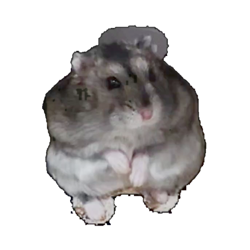

鼠鼠功能主页
所有陪伴功能，都藏在这只小仓鼠里
正在陪伴
今天想和鼠鼠做什么？
轻轻点它的耳朵、脸颊、小爪或肚子。
鼠鼠功能主页六个区域，六种陪伴
DESKTOP COMPANION
今天也一起慢慢来吧
鼠鼠正从小木屋里探出脑袋，准备陪你度过今天。
🌙 夜间活跃🏠 喜欢小木屋🎡 跑轮选手
我在这里陪你～

✦✦·鼠鼠现在怎么样
🐹
正在陪伴
心情很好，肚子也很满足
今天和鼠鼠
0次摸摸
0次投喂
0次跑轮
0分钟陪伴
亲密度
Lv.1 初次见面再互动一下，我们会更熟悉彼此
快捷照顾
今天的日记
鼠鼠正在认真回忆今天发生的事情……
鼠鼠的小档案
2024 年 6 月 9 日出生，体重六十多克。喜欢住在小木屋里，晚上精力旺盛，最爱跑跑轮。
和鼠鼠聊天
鼠鼠会认真理解你刚说的话，并记住最近的聊天内容。
🏠 当前为免费本地模式，不会产生任何 API 费用。
可以问鼠鼠
FEEDBACK
问题反馈
告诉我们哪里需要改进
鼠鼠动作库
目前共有 6 种真实透明动作，点击即可让桌面鼠鼠演示。
支持透明 WebP、GIF、APNG、PNG。普通笼内视频暂不自动抠图，避免生成残缺鼠鼠。
鼠鼠的每日小记
每一天都会单独保存，可以随时翻看
正在翻开日记本……
行为偏好
行为开关、鼠标特效、形态和语言已经统一移到顶部“设置”中。
鼠鼠形态
可随时切换；程序会记住你上次选择的形态。
真实动态后续可直接换成鼠鼠的透明视频动作。
给鼠鼠装扮
装扮会佩戴在头顶、眼睛或颈部；睡觉和跑轮时会暂时收起。
自定义鼠鼠的话
添加后会和内置台词一起，在点击鼠鼠时轮流出现。
投喂鼠鼠
每一种食物都会真实出现在鼠鼠手里
这次喂多少：
今日投喂记录
还没有投喂，鼠鼠正在等你～
上次吃了还没有